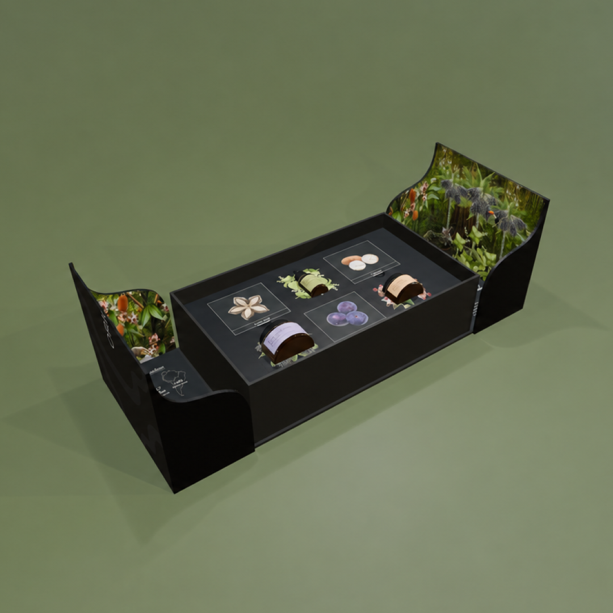
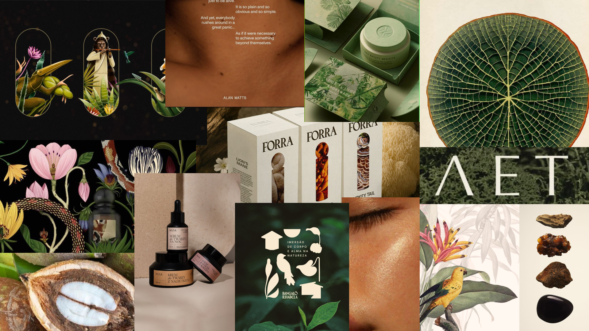
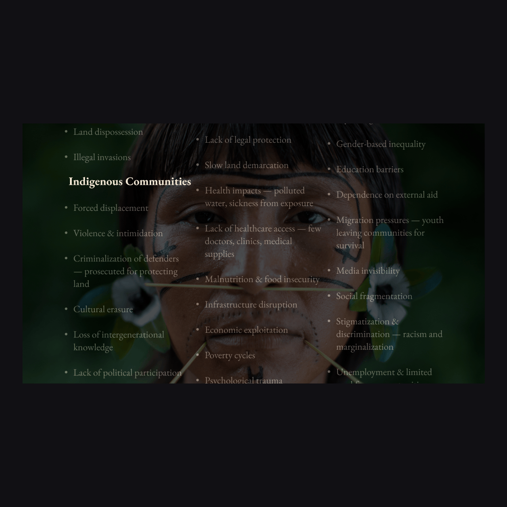
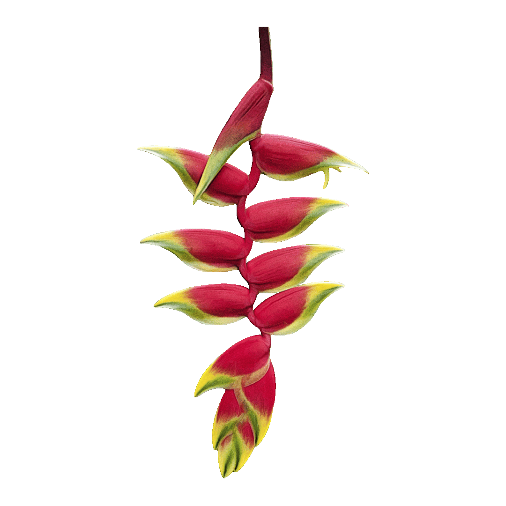
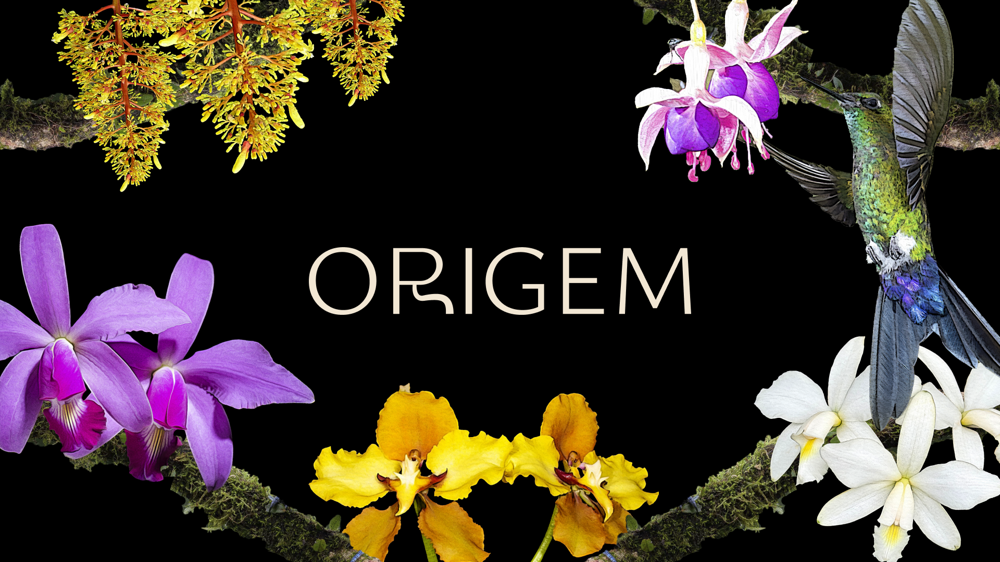
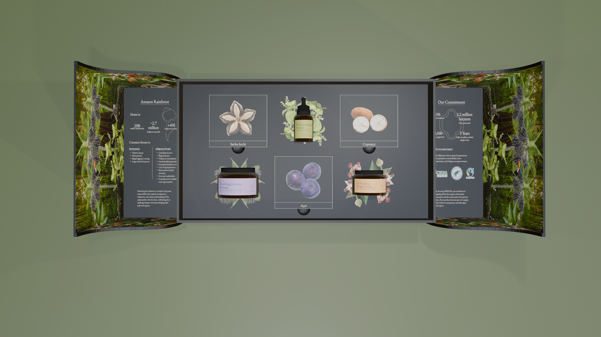
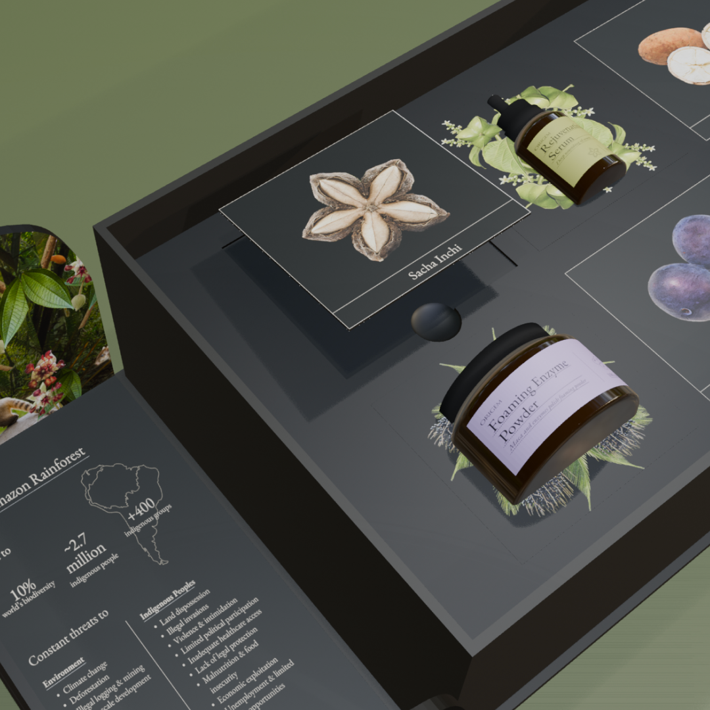
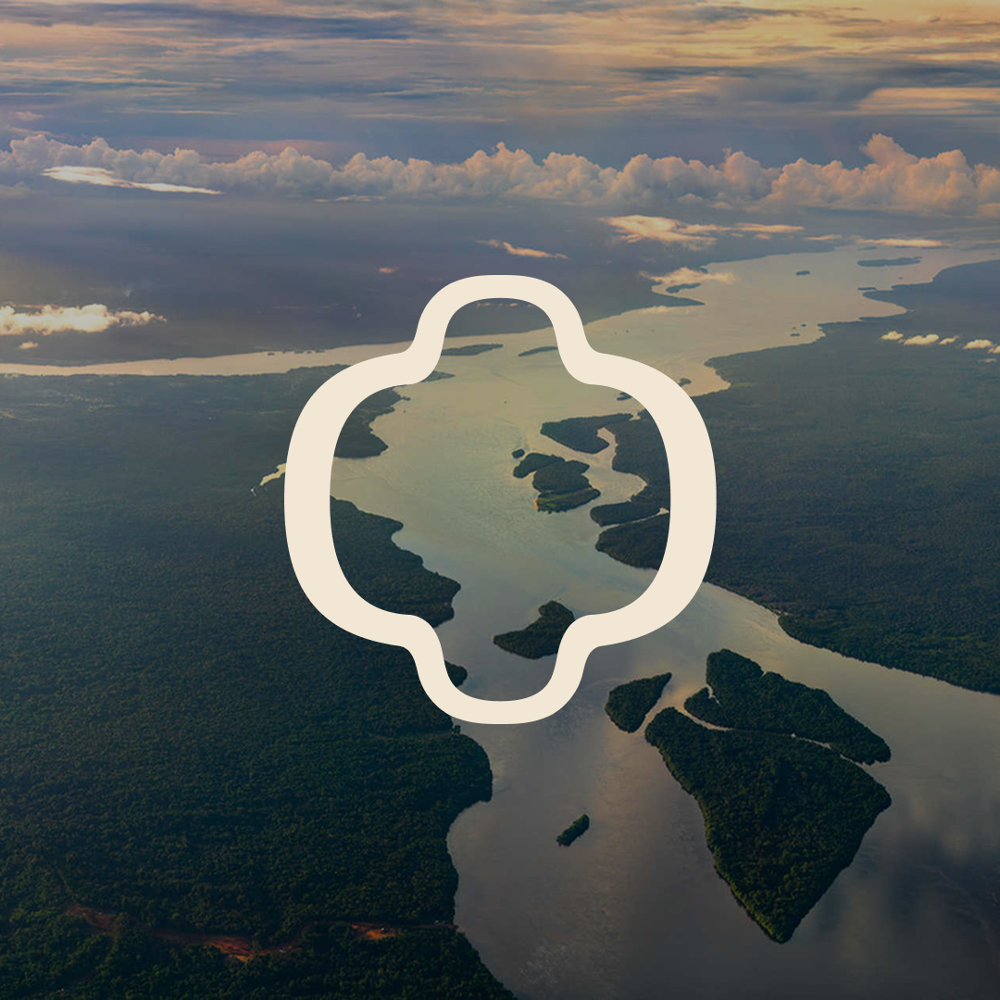
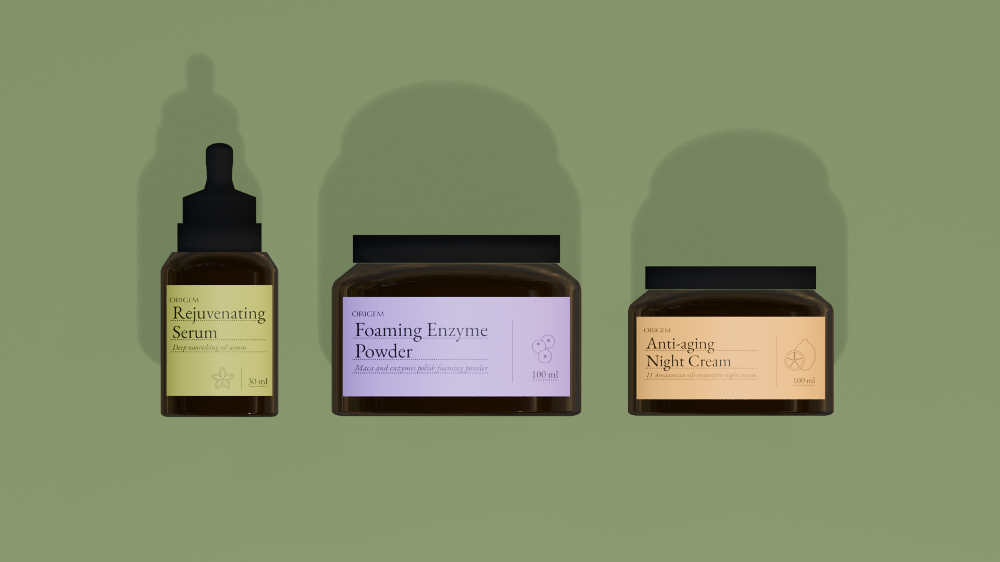
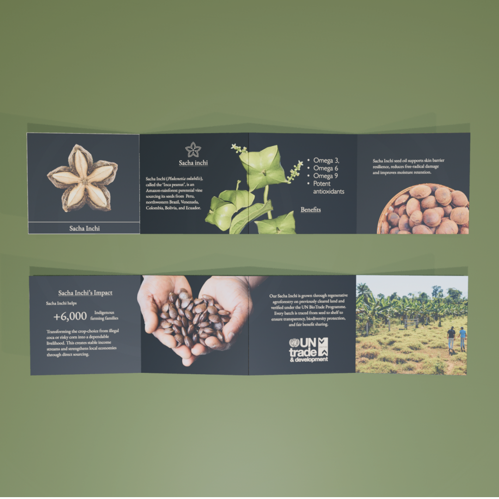

Origem
Amazonian Skincare Brand

ORIGEM is a regenerative skincare brand rooted in the Amazon that rethinks how natural beauty sources its ingredients. It connects high-performance formulations with the ecosystems and communities behind them through scientific research, ethically sourced botanicals, and fully traceable supply chains. Through its visual identity and product system, ORIGEM reframes luxury as responsibility, where beauty actively reinvests in biodiversity and Indigenous stewardship.

Challenge
Representing the Amazon requires balancing emotional storytelling with ethical responsibility, without oversimplifying its environmental, cultural, and economic realities. At the same time, public skepticism toward sustainability claims demands transparency, traceability, and measurable impact. The challenge was to build a cohesive system where storytelling, design, and business strategy work together to communicate urgency and offer a credible alternative to extractive practices.
Business Model
The business model is informed by research into the organic skincare market, consumer demand for accountability, and the environmental and Indigenous realities of Amazonian sourcing. It focuses on sourcing as a key point of intervention, addressing how industries extract value while excluding the communities behind these ingredients.

Visual Approach
The scientific approach emphasizes clarity and traceability, presenting Amazonian botanicals through their functional properties while maintaining a visible link to their origin. This is reinforced through imagery that transforms photographs into precise, botanical-style illustrations, creating a specimen-based visual language that prioritizes accuracy and transparency.






